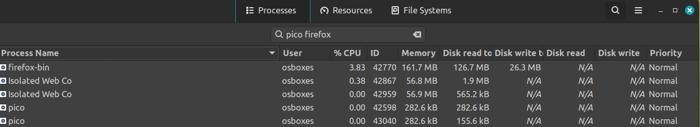
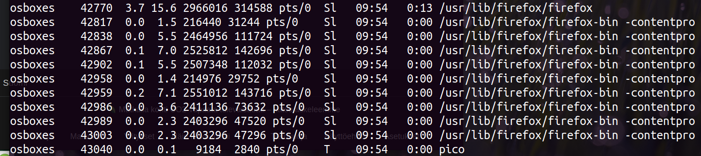
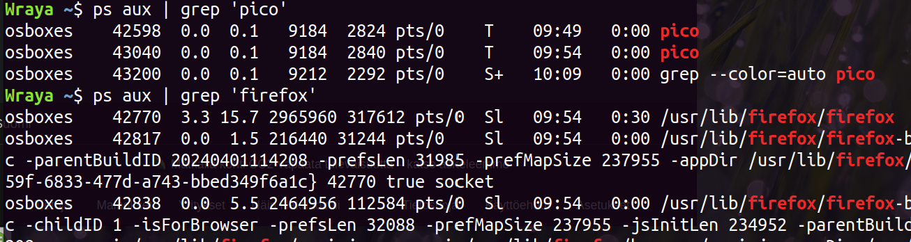
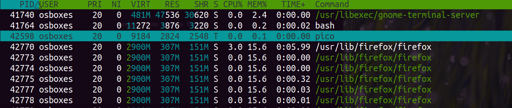
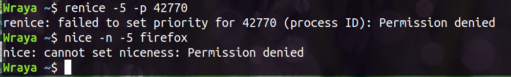
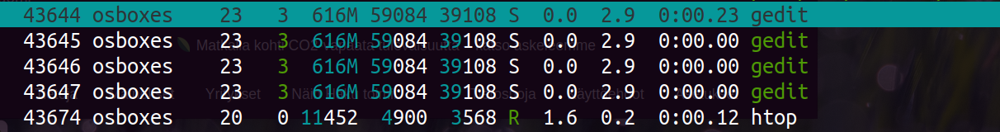
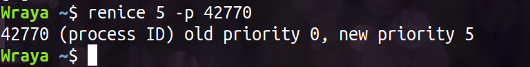

Selvitä prosessien ID-numerot ja mikä prioriteetti
Ensimmäiseksi tarkastelin prosesseja system monitorilla, sitten komentorivillä ps aux-komennolla ja sitten myös htopin kautta.

Prosessien nice-arvojen muuttaminen
Ensimmäinen yritys muuttaa nice-arvoja epäonnitui. Todennäköisesti, koska yritin muuttaa arvoja -merkkisiksi, joka nostaisi prioriteettia normaalia korkeammalle. Minulla ei ollut tähän oikeuksia, koska ehkä järjestelmä haluaa suojata, etten nosta turhanpäiväistä prosessia liian korkealle, joka haittaisi tärkeimpien prosessien toimintaa. Sen sijaan nice-arvojen muuttaminen positiivisten lukujen kanssa onnistui.

Prosessien lopettaminen kill-komento ja erilaiset valitsimet